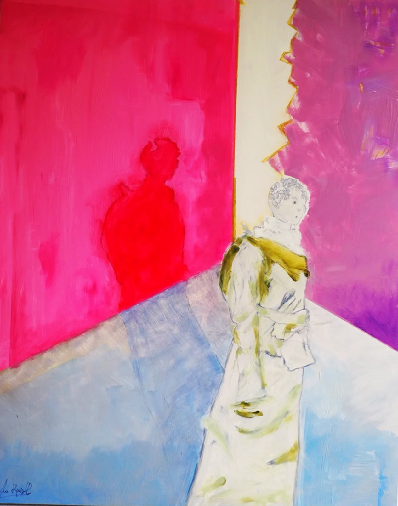
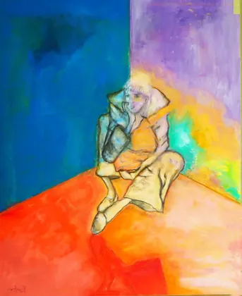
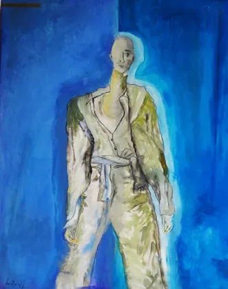
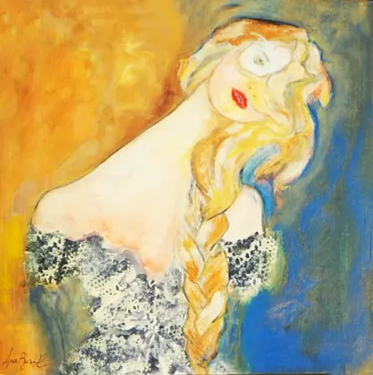
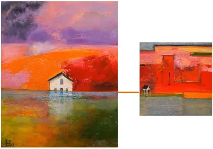
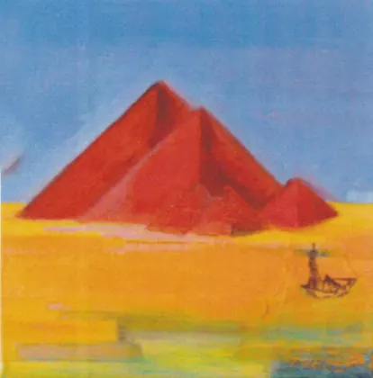
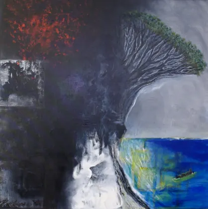
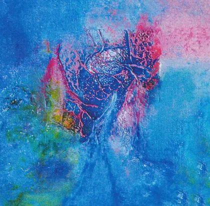
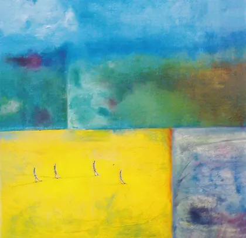

161ᵉ Salon de la Société versaillaise des artistes d’Île-de-France
Inauguración sábado 7 de noviembre, 15 h – 19 h · Entrada libre. Ana Ruiz presenta cuatro lienzos: Hypoderme, Épiderme, Deuxième peau y Peau d’âne.
Sitio oficial de Ana Ruiz Llamazares, pintora y artista plástica. Pinturas, instalaciones, exposiciones y artículos de prensa: toda su trayectoria está reunida aquí.

Inauguración sábado 7 de noviembre, 15 h – 19 h · Entrada libre. Ana Ruiz presenta cuatro lienzos: Hypoderme, Épiderme, Deuxième peau y Peau d’âne.
Ana Ruiz desarrolla una obra de pintura e instalación en la que el color, la materia y el imaginario componen un universo sensible y estructurado. Sus lienzos dialogan de una serie a otra: casas, paisajes volcánicos, rostros y prendas se convierten en territorios íntimos.
Las obras están disponibles para su adquisición: contacte con la artista para conocer disponibilidad y precios.
Nacida en León (España), Ana Ruiz Llamazares estudió en la escuela CEAC, en España, en la disciplina de dibujo artístico, y después en París con la pintora argentina Beatriz Lozada. Vive y trabaja en Francia desde 1987.
Primer premio de joven artista en el Monumento al minero de Guardo (España) en 1976, fue elegida artista del año en Gif-sur-Yvette en 2004 y presentó al año siguiente «Angles de vie» en el castillo de Belleville.
Su obra se ha expuesto en Gif-sur-Yvette (galería-restaurante Le Canapé, castillo de Belleville), Villebon-sur-Yvette, Palaiseau y Jouy-en-Josas.







